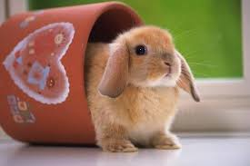
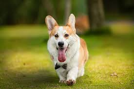
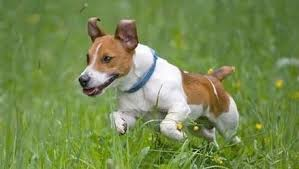
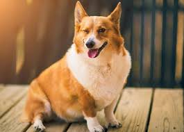

<!DOCTYPE html>
<html lang="en">

<head>
    <meta charset="UTF-8">
    <meta http-equiv="X-UA-Compatible" content="IE=edge">
    <meta name="viewport" content="width=device-width, initial-scale=1.0">
    <title>Document</title>
    <style>
        * {
            margin: 0;
            padding: 0;
        }
        
        #outer {
            background-color: greenyellow;
            height: 200px;
            padding: 5px 0;
            margin: 50px auto;
            width: 310px;
            position: relative;
            overflow: hidden;
        }
        
        #imgList {
            list-style: none;
            width: 2600px;
            position: absolute;
            left: 0px;
        }
        
        #imgList li {
            float: left;
            margin: 0 5px;
        }
        
        img {
            width: 300px;
            height: 200px;
        }
        
        #nav {
            position: absolute;
            /* 设置位置 */
            bottom: 15px;
            /* 设置居中： outer 宽度310px, nav 宽度80，最好JS里设置 */
        }
        
        #nav a {
            /* 设置超链接浮动 */
            float: left;
            width: 10px;
            height: 10px;
            margin: 0 5px;
            background-color: red;
            opacity: 0.5;
        }
        /* 设置鼠标移入效果 */
        
        #nav a:hover {
            background-color: grey;
        }
    </style>
    <script>
        window.onload = function() {

            var imgArr = document.getElementsByTagName("li");
            var imgList = document.getElementById('imgList')
            var timer;
            imgList.style.width = 320 * imgArr.length + 'px';
            // 每切换一张图片，ul 元素的left 偏移量向左便宜 320px， 也就是 left: -310px;
            // 设置 nav  居中： 
            var nav = document.getElementById('nav')
            var outer = document.getElementById('outer')
            nav.style.left = (outer.offsetWidth - nav.offsetWidth) * 0.5 + 'px'
                // 设置第一个图片的超链接为hover 状态默认值
            var allA = document.getElementsByTagName('a')
            var index = 0;
            allA[index].style.backgroundColor = 'grey';
            // 为超链接绑定onclick 函数，点击后移动ul
            for (var i = 0; i < allA.length; i++) {
                allA[i].num = i;
                var id = allA[i].num;

                allA[i].onclick = function() {
                    // 在人工点击的时候，需要把自动轮换的功能关掉，也就是把定时器timer关了，
                    clearInterval(timer)
                        // 当人工点完了后，自动切换继续开启：最后一步调用回调函数；  
                    var index = this.num;
                    console.log(index);
                    setA();
                    this.style.backgroundColor = 'grey';
                    move(imgList, 50, -310 * index, 'left', function() {
                            autoChange()
                        }) // 动画执行完毕开启自动轮换

                }
            }
            // 用函数启动自动轮换：
            autoChange();


            // 创建一个函数，用来设置选中的 a： 
            function setA() {
                // 判断当前索引是否是最后一张图片：
                if (index >= imgArr.length - 1) {
                    // 则将 Index 设置为0；
                    index = 0;
                    console.log(index)
                        // 此时显示的是最后一张图片，和第一张图片是一模一样的，通过CSS 将最后一张切换成第一张：
                    imgList.style.left = 0 + "px"; // 这样就不会往回转了；
                }
                // 遍历超链接，设置背影颜色为红色；
                for (var i = 0; i < allA.length; i++) {

                    allA[i].style.backgroundColor = '' // 空串代表默认样式！ 因为内联样式优先级高，所以改为默认，回去找 CSS
                }
            };
            // 创建一个函数，让其自动切换图片,并加上标识 timer：
            var timer;

            function autoChange() {
                // 每隔一段时间调用一次 move 函数： 
                timer = setInterval(function() {
                    // 对索引进行自增，

                    index++;
                    index %= imgArr.length;
                    setA();
                    // 执行动画：
                    move(imgList, 30, -310 * index, 'left');
                    allA[index].style.backgroundColor = 'grey';
                }, 2000)

            }

            // 构造一个move 函数，供ul 元素调用；

            function move(obj, speed, target, attr, callback) {
                var currentValue = parseInt(getComputedStyle(obj, null)['left'])
                if (currentValue > target) {
                    speed = -speed;
                }
                obj.timer = setInterval(function() {
                    var oldValue = obj.offsetLeft;

                    obj.style.left = oldValue + speed + 'px'

                    if (speed > 0 && parseInt(obj.style.left) > target) {
                        obj.style.left = target + 'px'
                    } else if (speed < 0 && parseInt(obj.style.left) < target) {
                        obj.style.left = target + 'px'
                    };
                    if (parseInt(obj.style.left) == target) {
                        clearInterval(obj.timer)
                    }

                }, 30)

                callback && callback();
            };


        }
    </script>
</head>

<body>

</body>
<div id="outer">
    <ul id="imgList">
        <li>
            <li>
                <li>
                    <li>
                        <li>
                            <li>
                                <li>
    </ul>
    <!-- 创建导航按钮 -->
    <div id="nav">
        <a href="javascript:;"></a>
        <a href="javascript:;"></a>
        <a href="javascript:;"></a>
        <a href="javascript:;"></a>
        <a href="javascript:;"></a>
        <a href="javascript:;"></a>


    </div>
</div>

</html>